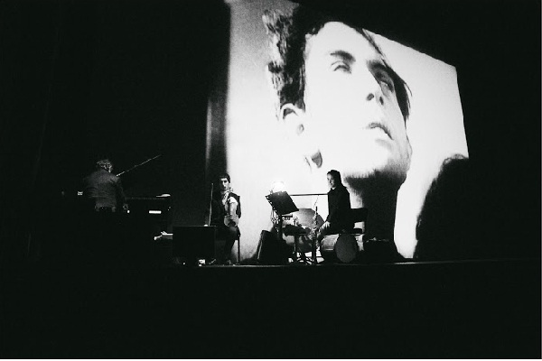

La lista de Schindler
John Williams
Desde sus orígenes, el cine ha estado fuertemente ligado a la música. Incluso en la época del cine mudo, las proyecciones se acompañaban de música en directo. Esta indisociable simbiosis ha dado lugar a lo largo de las décadas a un género musical con entidad propia, el de las banda sonora. En este paseo exploramos algunas de las bandas sonoras más representativas de la historia del cine.
John Williams